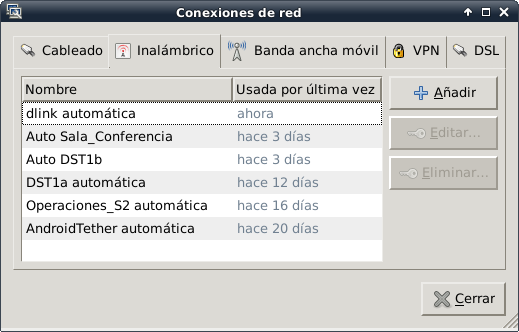
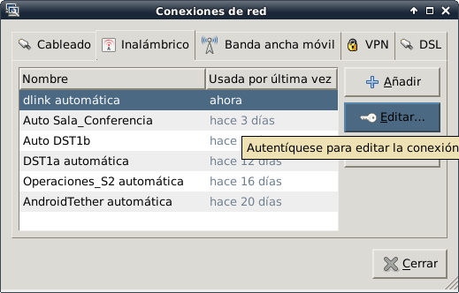
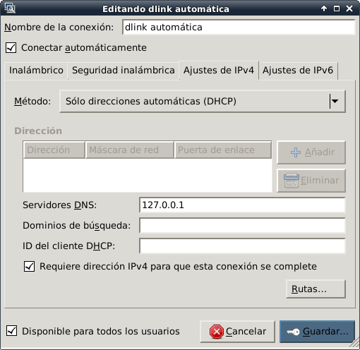
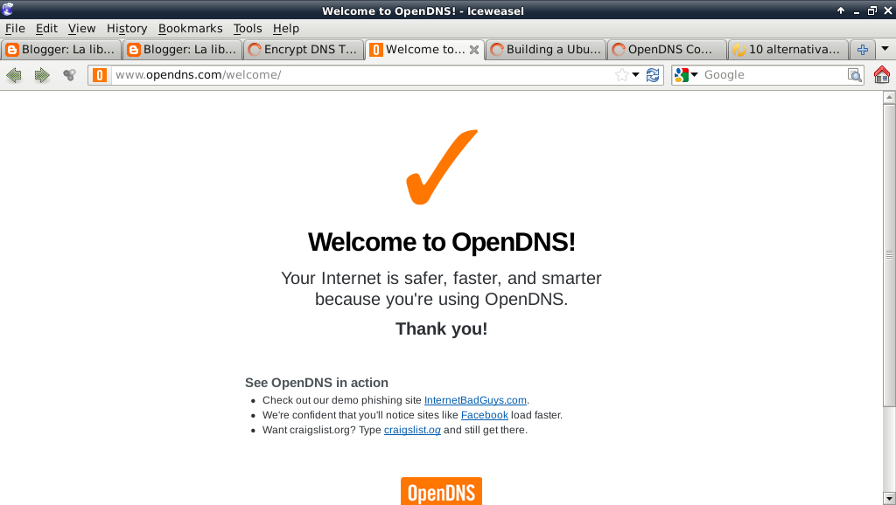

Cifrar el tráfico de DNS en Linux con DNSCrypt y OpenDNS
Posted on lun 20 febrero 2012 in Tutorial de Python • 1 min read
DNSCrypt permite cifrar las consultas de DNS entre el Computador y los servidores de DNS de OpenDNS, de esa forma se puede proteger al equipo de los ataques de Hombre en el Medio.
El artículo donde se basa este tutorial se encuentra en el siguiente enlace.
Para instalar dnscrypt para Debian se baja el paquete desde el repositorio de Github.
Se ejecuta dpkg:
#dpkg -i dnscrypt-proxy_0.9_i386.deb
Se inicia el proxy dns como demonio:
#dnscrypt-proxy --daemonize
Se edita las conexiones inalámbricas en este caso en la red que se conecta el equipo es inalámbrica:

Se selecciona la red inalámbrica y se edita su configuración:

Se selecciona la pestaña de Ajuste de IPv4, en el método se selecciona Sólo direcciones automáticas (DHCP) y se coloca la IP 127.0.0.1 en Servidor de DNS:

Para verificar que se esté usando los servidores de DNS de OpenDNS se abre el navegador a la URL http://www.opendns.com/welcome :

Ya se tiene cifrado la comunicación a los servidores de OpenDNS.
¡Haz tu donativo! Si te gustó el artículo puedes realizar un donativo con Bitcoin (BTC) usando la billetera digital de tu preferencia a la siguiente dirección: 17MtNybhdkA9GV3UNS6BTwPcuhjXoPrSzV
O Escaneando el código QR desde la billetera: